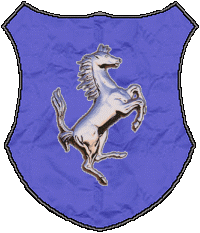

| Übersicht,
Anschläge und Stammtisch (RPG) |
|
Schöne Welt!
|
| Tyxaro von Ingham (RIP) |
Ich wollt einfach nurmal so Sagen, das es mir wirklich gut geht.
Und froh bin Das man doch so gute Freunde Hat das möcht ich mit allen teilen *grinst*
Auf das Wohl!
*prost*
Sir Tyxaro von Ingham
Zur 11. Stunde am 15.Dunkelfrost im Jahre 415 |
25.04.04 14:53
 |
|
| Tyxaro von Ingham (RIP) |
Hier könnt Ihr nun eure Frohen Gefühle hinschreiben, da es ja bestimmt nicht nur schlechtes im mom gibt!
Danke!
Herzlichst
Sir Tyxaro von Ingham
Zur 12. Stunde am 15.Dunkelfrost im Jahre 415 |
25.04.04 15:05
|
|
| Faelon von Fidelitas (RIP) |
*fragt sich warum am boden so viele abgerissene zettel liegen*
Baron Faelon von Fidelitas,
Vorsteher von Rebellenfeste,
Anführer der glorreichen Nation "Rebellen der Freiheit",
Diener im Dienste des wahren Glaubens an Kuirr
Zur 12. Stunde am 15.Dunkelfrost im Jahre 415 |
25.04.04 15:07
|
|
| Tyxaro von Ingham (RIP) |
Werter Faelon!
ich habe vor ca. 5 minuten geschrieben weshalb. da diese abrisse absolut nicht zum Thema Passten!
((Können wir bitte mal beim Thema Bleiben und jetz nicht alle 2 Min jemand Fragt warum ich die abgerissen habe?...GRUND: Thema Verfehlt))
Sir Tyxaro von Ingham
Zur 12. Stunde am 15.Dunkelfrost im Jahre 415 |
25.04.04 15:10
|
|
| DemonHunter Baroque (RIP) |
Eine sehr schöne Welt, überall reiche Leute, wo ihr Geld in der nächsten Taverne "vergessen" *g*. Überall Karawanen, die mir ihr Geld regelrecht in die Hand drücken und natürlich die netten Leute, wo alle eine Massage wollen (von meinem Streitkolben versteht sich *g*)
Tja, inder Tat, eine sehr schöne Welt.
Mfg DH B.
DemonHunter Baroque
Zur 16. Stunde am 15.Dunkelfrost im Jahre 415 |
25.04.04 16:05
|
|
| seth béliar (RIP) |
wunderbare Welt =)
*nicht mehr im Kreis dreh aber trotzdem freu*
Gollor,
Priester im Dienste des einzig wahren Glaubens an Pheron
Zur 18. Stunde am 15.Dunkelfrost im Jahre 415 |
25.04.04 16:26
|
|
| Lacrim Blutengel (RIP) |
einfach eine tolle welt ...
((wo is hier der sinn?))
Vampire,
Anführer der glorreichen Nation "Klingen der Vergeltung"
Zur 3. Stunde am 16.Dunkelfrost im Jahre 415 |
25.04.04 18:39
|
|
| Devias Aegnor (RIP) |
*kopfschüttel*
Sinn, komm raus, du bist umstellt!
Sir Devias Aegnor,
Schriftführer
Zur 4. Stunde am 16.Dunkelfrost im Jahre 415 |
25.04.04 18:47
|
|
| wollium von der zeitwacht (RIP) |
Der Sinn ist das der, dass der Müllberg wächst
wollium von der zeitwacht,
Medicus Humanus
Zur 4. Stunde am 16.Dunkelfrost im Jahre 415 |
25.04.04 18:47
|
|
Zipfelmütz von Dahén
  |
Warum lasst Ihr Tyxaro von Ingham nicht einfach rausrufen dass er sich im Moment gut fühlt? es ist doch schön, wenn jemand Gefallen an seiner Existenz findet.
Zipfelmütz von Dahén
Zur 6. Stunde am 16.Dunkelfrost im Jahre 415 |
25.04.04 19:21
|
|
| Glorfindel von Gondolin (RIP) |
Es ist eine wunderbare Welt. Die Scheuzern sind prall gefüllt für den Winter und genauso die Fässer im Keller. Der Stress des Herbstes ist vorbei und in der kalten klaren Winterluft iust der eine oder andere Gedanke an das nächste Jahr möglich.
Ein gutes Leben auf der Scherbenwelt im Moment. Frieden und Ruhe allüberall.
Sir Glorfindel von Gondolin,
Vorsteher von Albiontar
Zur 10. Stunde am 16.Dunkelfrost im Jahre 415 |
25.04.04 20:09
|
|
| Karhu Karijalan (RIP) |
natürlich ist es hier auch schön, aber noch lieber wär ich jetzt auf kryll.. *an die heimat denkt und mit gesenktem haupt davonwandelt*
Baron Karhu Karijalan,
Vorsteher von Wespenberg,
Anführer der glorreichen Nation "Die Garde"
Zur 15. Stunde am 16.Dunkelfrost im Jahre 415 |
25.04.04 21:25
|
|
| Njaminjami Stoppelhoppser (RIP) |
Eine wunderbare Heimat habe ich gefunden. Die Weiten der Sonnensteppe werden mir in Zukunft edle und starke Hengste hervorbringen.
Iriana Silberklinge
Zur 18. Stunde am 16.Dunkelfrost im Jahre 415 |
25.04.04 22:10
|
|
| Kelestor (RIP) |
Sir Tyxaro von Ingham,
auf das wir uns öfters auch in guten Zeiten zusammenfinden werden und nicht nur über die Schlechtigkeiten der Welt debattieren. *sein Glas erhebt*
Auf Euch und die Scherbe.
Sir Kelestor,
Vorsteher von Isengard,
Anführer der glorreichen Nation "Die Ewigen"
Zur 2. Stunde am 17.Dunkelfrost im Jahre 415 |
25.04.04 23:58
|
|
| Vorondil Coldleaf (RIP) |
Ist es nicht ein wunderbares Gefühl einer Alten Frau die Knochen zu brechen? Da fühlt man sich gleich soviel Jünger und erfüllter *grinst*
((PS: Das is nur Spaß hehe))
Vorondil Coldleaf
Zur 18. Stunde am 17.Dunkelfrost im Jahre 415 |
26.04.04 3:45
|
|
| Kelestor (RIP) |
(Du siehst zu viel Robin Hood ;-)
Sir Kelestor,
Vorsteher von Isengard,
Anführer der glorreichen Nation "Die Ewigen"
Zur 5. Stunde am 19.Dunkelfrost im Jahre 415 |
26.04.04 11:50
|
|
Übersicht,
Anschläge und Stammtisch (RPG)
|